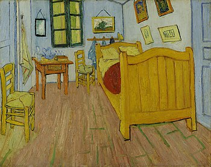
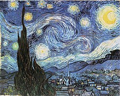
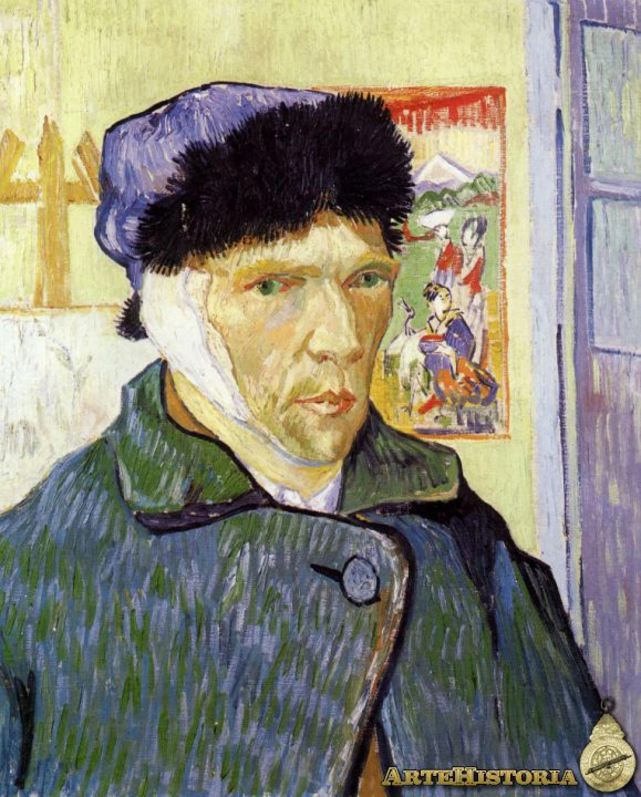

Vincent Willem van Gogh (30 de marzo de 1853-Auvers-sur-Oise, 29 de julio de 1890) fue un pintor neerlandés, uno de los principales exponentes del postimpresionismo.
La calidad de su obra fue reconocida solo después de su muerte, en una exposición retrospectiva en 1890, considerándose en la actualidad uno de los grandes maestros de la historia de la pintura. Influyó grandemente en el arte del siglo XX, especialmente entre los expresionistas alemanes y los fauvistas como Matisse, Derain, Vlaminck y Kees Van Dongen. Falleció a los 37 años por una herida de bala de pistola; aún no se sabe con seguridad si fue un suicidio o un homicidio involuntario. A pesar de que existe una tendencia general a especular que su enfermedad mental influyese en su pintura, el crítico de arte Robert Hughes cree que las obras del artista están ejecutadas bajo un completo control; de hecho, el pintor jamás trabajó en los periodos en los que estaba enfermo.

La Habitación de Vincent en Arles |
 |
|---|---|
|  | La noche estrellada |
Los comedores de patatas |
 |
 |
El café de noche |
Autorretrato con la oreja vendada |
 |